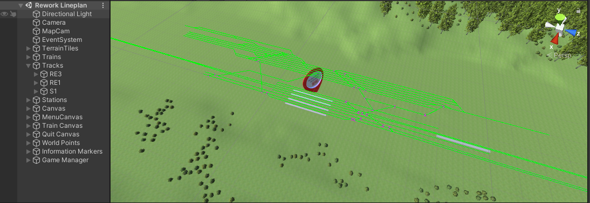
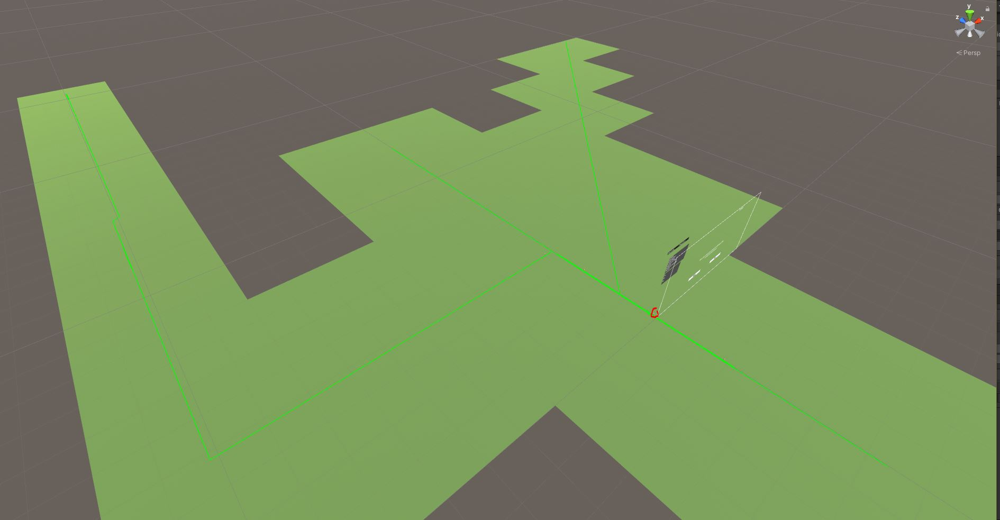
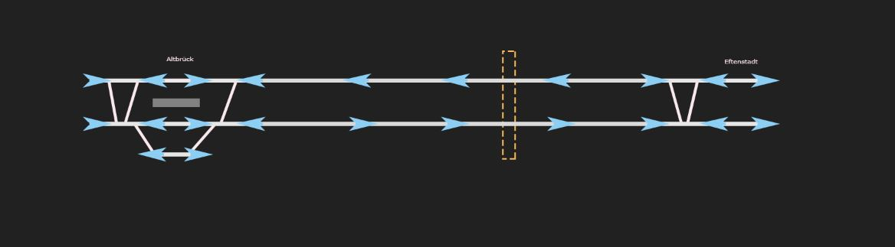
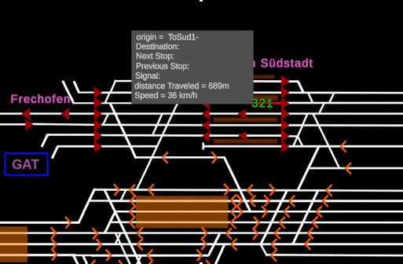
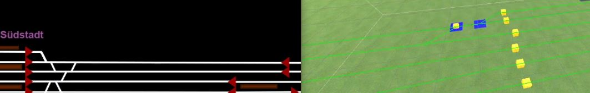
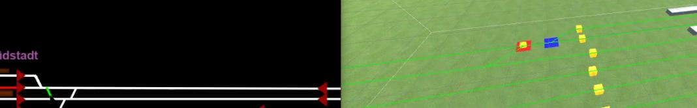

Deutsche Bahn 100 Days!
Deutsche Bahn Sales Pitch
Before getting Deutche Bahn as customers for the software, we had to prove to Deutche Bahn that we were better than our competitors. My boss had asked me to make a unity concept for them. I found a nice train asset and did desktop research for what it is that they would want out of this software. From what I had gathered and what I estimated would be possible in the short time, I created the 3 day concept which contributed to the winning of the sales pitch. Considering how little I knew back then, I'm actually proud how this small simulation turned out. There are clear issues with it that I would now know how to resolve, like conforming the train to the track better and making the train switch smooth, but over all its not terrable.
Introduction
Our 100 days to digitize the training tool at Eisenbahnbetiebsfeld with Deutsche Bahn had begun on the 22nd of February. I was Introduced with my Deutsche Bahn manager and the business team and did a few kick-off events. Initially I found it very nerve racking communicating with my manager and the business team. This was noticeable in my voice and my initial shyness but I quickly got used to it. We spend the first couple of weeks letting the business team gather requirement data which was imperative for starting the project. I had also set up "GitHub projects" to keep track of initial and later requirements. In the meantime, I wrote up a requirement document summery, design document, and set up a git repository as well as a project timeline.
Modeling
After about a week we got the first track mirror with the lengths of each track.
This allowed me to extract all the data we needed from the graphical trains traveling from signal to signal.
I had also changed my path creator code to support multiple trains apposed to my 3-day concept which was only written for one train on many tracks.
The maps that the business team had provided looked very complicated and there was a huge number of tracks to map out in 3d space.
I mapped out most of this in worldspace over a three week period while concurrently doing Jersey planning applications. Upon later knowlage of the game engine, I now know I could have writen code that could generate this on the fly based on provided measurments.
I also added a basic sphere train that gathered all the data such as the distance speed and time as well as place and the signal that the train is on.
I never got to finish mapping out the entirety of the lines provided to us as it is a lot for a student to do in the short time provided and we were not keeping to the project timeline, but I mapped out 3 of the main track mirrors in world space.

UI
I spend some time researching how I was going to create the user interface.
I had come up with a way to import sprites on separate photoshop layers directly onto the UI canvas.

I then proceeded to map and draw out the Stammstracke control system.
I created a naming convention where each layer on the photoshop image has the same name as the corresponding track in the worldspace lines.
After mapping up the first user interface and imported each component into unity it looked great.
There were some issues, like layers taking over an entire screen. and all of the items needed to be reimported as white.
The advantage of the method I used for importing the sprites allowed each individual aspect of the track mirror to be selectable.
They could then be associated with buttons and hover text to create an interactable program.
Fuctionality
 After the presentation I was introduced to my new pair programming partner David. David spent a week looking through the project and decided it was'nt Scalable. We disgussed an archetectural rework which I was open to. He set up the Game manager object which contained the UI Manager which provided a greater level of class communication between scripts which made me very happy to have him on the team. I then created tool tips for the trains and station platforms.
Switches and Route Setting
I then set up switches on the UI and in worldspace. This allows the dispatcher to flip switches in the simulated world active or inactive manually or when route setting. I had created my own basic path finding algorithm and began the line drawing to display rout setting based on the algorithm. I did this by adding components to periferal paths. There componenets would do the same, until the distination was hit. A list was then generated based on back tracking the steps of the paths to find the start points. All the paths that were in the list were kept and all the ones that werent had the components removed. It was then a matter of finding the signals that path was on. Initially this was represented by just changing the colours of the paths, but the Deutsche Bahn team needed lines drawn, so I further developed the line drawing for the route setting using a line renderer. I was very happy with how david allowed my to do so much on the project. 
Since we were on call every day I thought he would be a good communicator, but I was heavily mistaken. After a two week period we had to present the state of the projects to the managers. It had turned out my partener took parallel programming a bit too literally. He was working on his own version of the project. I decided since he is behaving this way, the only way we would be able to work together is if I work from his version of the project. As such, the aforementioned requirements had to be reimplmeneted as he didnt have them in at the time and his version of the project was so differnet it was unmergable. He did have an additional view of the worldspace trains. I've since learned how to deal with work conflicts, although after a while I did exhibit visible emotional reactions when other issues arisen and werent being delt with.